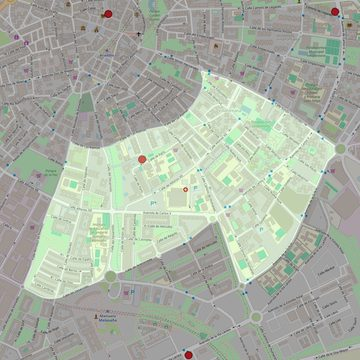

Virgen del Carmen
- Arciprestazgo
- Móstoles
- Población
- Móstoles
- Dirección postal
- c/ París, 4
- Código postal
- 28938
- Extensión
- 1,13 km² (113 ha)
- Teléfono
- 916 456 297
- Correo electrónico
- parroquiadelcarmenmostoles@gmail.com
- Información demográfica
- De la parroquia · De la población (Móstoles) · Del arciprestazgo (Móstoles)


Descargar mapaLímites según decreto
" Partiendo del punto de confluencia de la calle de Las Palmas con la Carretera de Fuenlabrada (calle Simón Hernández), siguen por el eje de dicha carretera en dirección Sur hasta los términos municipales de de Móstoles-Fuenlabrada y Moraleja de Enmedio , en dirección Oeste hasta la altura de la calle Moraleja de Enmedio, y por dicha calle hasta encontrar la calle de Las Palmas; siguen por la calle de Las Palmas (incluyendo la doble numeración) en dirección Este hasta su confluencia con la Carretera de Fuenlabrada, punto de partida". (Decreto de rectificación de límites de 12-9-84)